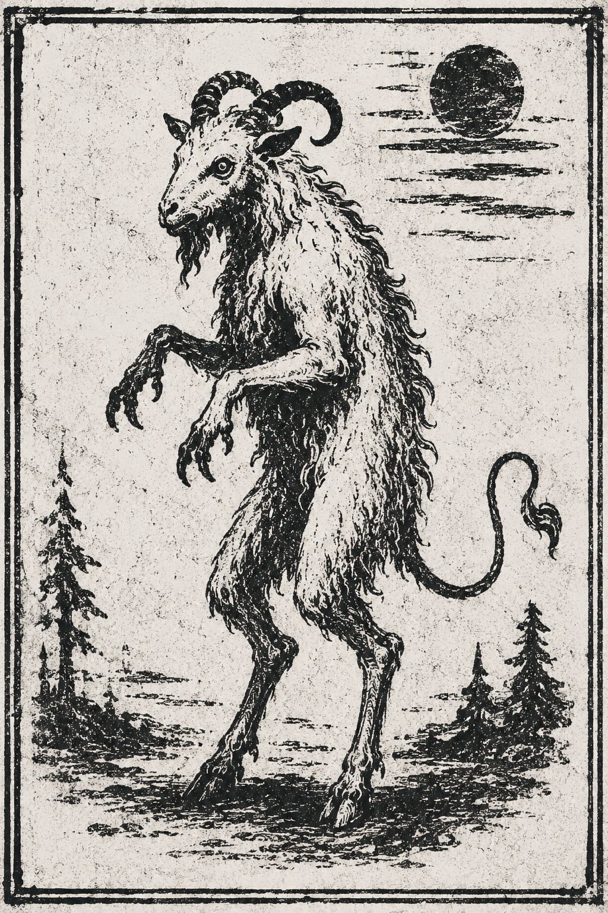
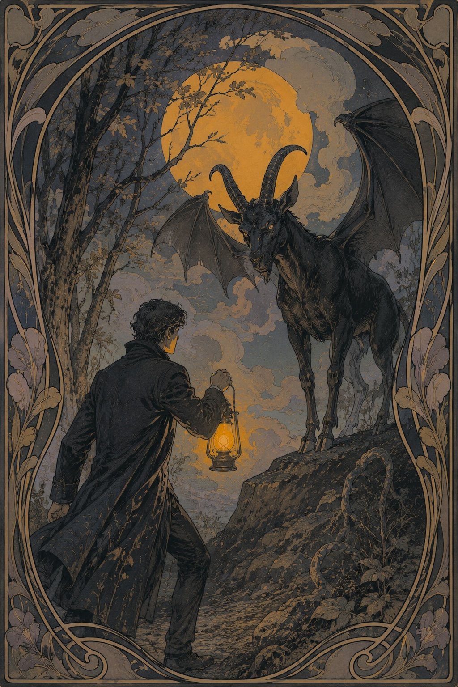
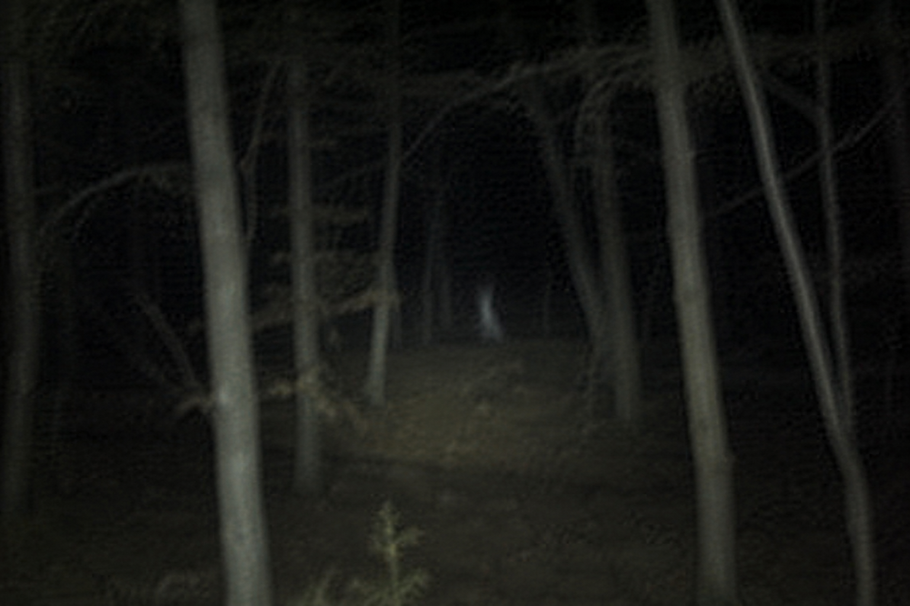

噬夢魔
| 分類 | 未確定 |
| 別名 | 噬夢魔、食夢者、夢獸 |
| 棲地 | 不明 |
| 食物 | 夢／情緒（尚有爭議） |
| 活動時間 | 夜間居多 |
| 危險程度 | 無法評估 |
| 可靠資料 | 極少 |
1. 概述
「噬夢魔」（Dream Devourer）是一種僅存在於少數地方紀錄中的生物。關於其是否真的存在，目前沒有足夠證據可以下定論。
早期文獻通常將其描述為「吞食夢境的魔物」，因此英文資料多使用 Dream Eater 或 Dream Devourer。然而近年的少量觀察紀錄對此提出不同說法。
興奮、悲傷、恐懼、憤怒等情緒皆可能被吸收。情緒越強烈，夢境中的異常活動通常越明顯。
2. 外觀
以下描述可信度很低。不同地區的資料差異極大，因此曾有人認為這些紀錄其實描述的是完全不同的生物。
最常見的舊說法稱其「像一隻站立的羊」，有蝙蝠般的尖牙，使用兩隻後足行走。有些手稿甚至提到它會在月光下發出類似鳥叫的聲音。後兩項目前均無可靠證據。



3. 攝食方式
「吃夢」可能是最常見、也最容易造成誤解的描述。根據目前少量觀察，噬夢魔真正需要的似乎不是夢境本身，而是夢境中的強烈情緒。
- 興奮、喜悅、恐懼、悲傷、憤怒等皆可能成為能量來源。
- 情緒強度越高，似乎越容易吸引噬夢魔。
- 它能感知生物的情緒，以及某種被研究者暫稱為「夢能」的能量。
- 長時間沒有攝取足夠夢能時，能力會下降。
「夢能」並非已被科學界承認的物質，只是方便研究者描述未知現象的暫用名詞。
4. 入夢現象
據稱噬夢魔可以在生物清醒時，使其在毫無察覺的情況下進入夢境。進入後，夢境通常會偽裝得與現實非常相似，因此當事人往往不知道自己已經睡著。
夢中的人物、場所與事件可以與現實高度一致。噬夢魔似乎也能自然地出現在其中，不會立即被夢境主人視為異常。
有紀錄稱，噬夢魔會利用場景、人物與事件誘發恐懼、悲傷或興奮，以增加夢境中的情緒濃度。
目前唯一較一致的說法是：當夢境主人真正意識到自己正在做夢，並主動嘗試醒來時，噬夢魔無法阻止其清醒。
5. 能力階段
有一份未署名研究筆記曾嘗試將噬夢魔的能力分為三階。 這套分類沒有經過正式驗證，甚至無法確定三階是否真的代表不同的生物階段。 以下內容主要來自零散紀錄與研究者推測。
第一階
- 可能使夢境主人反覆做惡夢。
- 夢境容易變得混亂，內容出現不連貫或難以解釋的變化。
- 醒來後可能出現異常疲憊的情況。
第二階
- 夢境中容易產生怪異現象。
- 曾有紀錄描述夢中出現從未見過、卻能被清楚記住面孔的人。
- 目前無法確認這些異常是否與噬夢魔直接相關。
第三階
- 據稱可能造成極端可怕的惡夢。
- 部分資料聲稱，若夢境主人在夢中死亡，本人也可能於現實中死亡。
- 目前沒有足以證實此說法的可靠案例。
「三階」並非已被證實的生物學分類。現有資料不足以確認能力是否真的會按照固定階段變化， 以上內容應視為未經證實的研究紀錄與地方傳聞。
6. 現場紀錄
下圖為 1997 年冬季一名林務人員提供的照片副本。原始照片據稱是在 Oakley 郊外森林拍攝，但照片本身幾乎沒有可辨識內容。

另一份手寫筆記則記錄：「半夜聽見像人在笑的聲音，回頭什麼都沒有。」這類描述在地方傳聞中相當常見，但沒有任何方式證明與噬夢魔有關。
7. 備註
本頁最早版本可能建立於 2003 年左右，後續僅有少量修改。原作者身分不詳，部分連結目前已失效。
2010 年後曾有人嘗試重新整理相關資料，但沒有找到新的可靠樣本，因此本頁暫時保留舊版本內容。
如果您持有與 Dream Devourer 有關的照片、手稿或第一手觀察紀錄，請勿自行刪除原始檔案。尤其不要對影像進行過度銳化或降噪；過去幾次「清晰化」處理反而造成了更多錯誤辨識。